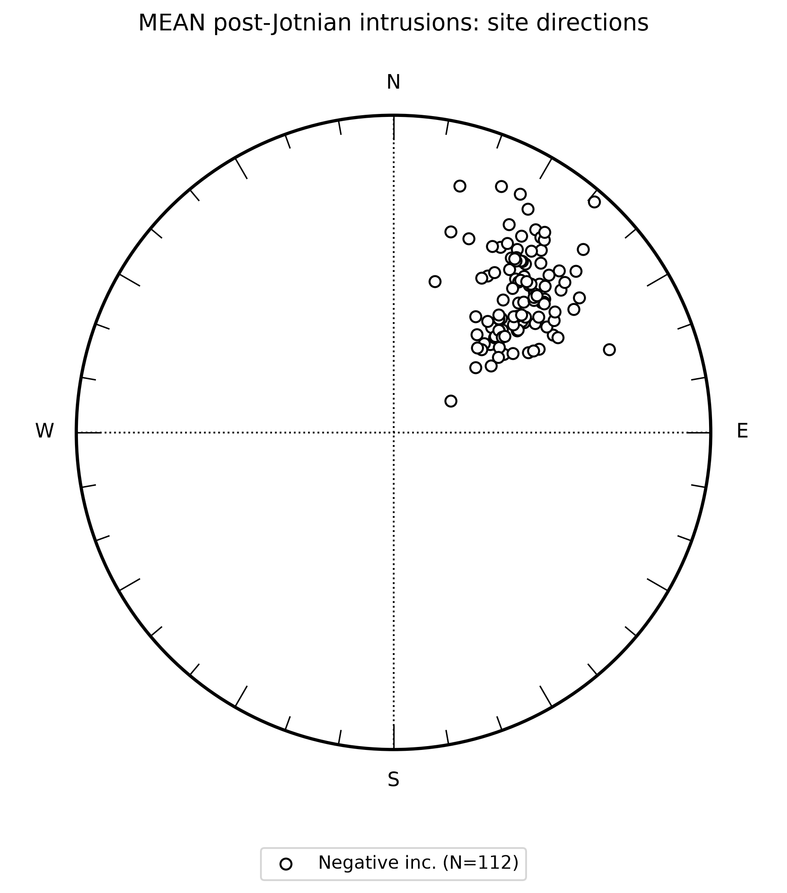
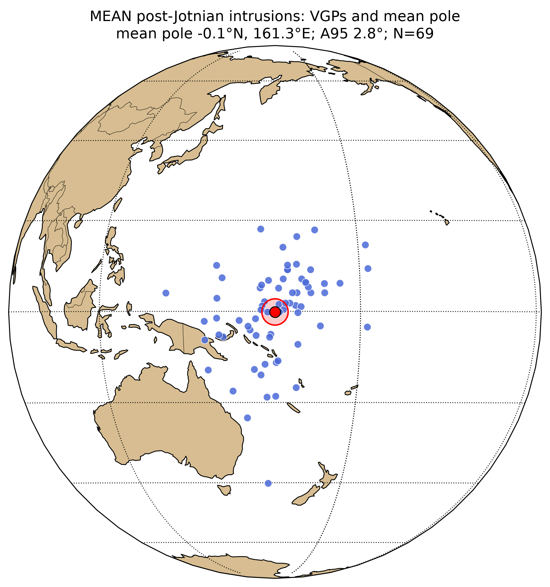
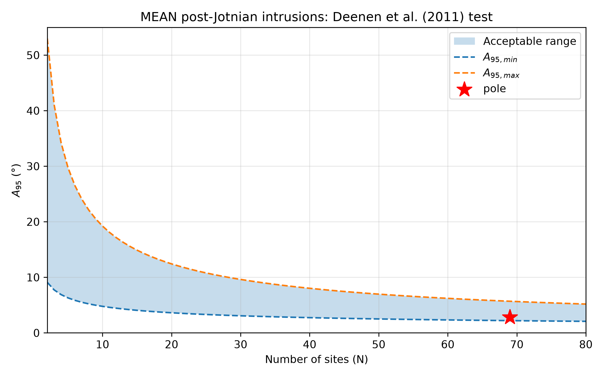

Western Dalarna intrusions
Baltica Precambrian pole assessment page — database-linked v6 / assessment scaffold
Pole information
Site-level link status
Scientific assessment scaffold
Site-level data
| site | dir_dec | dir_inc | dir_k | dir_alpha95 | dir_n_samples | vgp_lat | vgp_lon | authors | comment |
|---|---|---|---|---|---|---|---|---|---|
| Mean Ulvö dolerite | 45.1 | -37.4 | 52 | -1.52848 | 157.057 | Need digitizing | |||
| Vasa dolerites 233.1 | 30 | -33 | 59.1 | 7 | 6 | 172 | Neuvonen (1966) | ||
| Vasa dolerites 234.1 | 39 | -27 | 118.6 | 8 | 7 | 163 | Neuvonen (1966) | ||
| Vasa dolerites 235.1 | 35 | -23 | 317.5 | 5 | 7 | 167 | Neuvonen (1966) | ||
| Vasa dolerites 235.2 | 34 | -31 | 177.2 | 8 | 6 | 168 | Neuvonen (1966) | ||
| Vasa dolerites 236.1 | 33 | -27 | 142.4 | 9 | 9 | 169 | Neuvonen (1966) | ||
| Vasa dolerites 237.1 | 37 | -33 | 185.9 | 6 | 4 | 166 | Neuvonen (1966) | ||
| Vasa dolerites 238.1 | 37 | -24 | 72.4 | 9 | 9 | 164 | Neuvonen (1966) | ||
| Vasa dolerites 239.1 | 38 | -33 | 61.6 | 9 | 4 | 165 | Neuvonen (1966) | ||
| Vasa dolerites 240.1 | 41 | -4 | 25.2 | 6 | 18 | 158 | Neuvonen (1966) | ||
| Vasa dolerites 241.1 | 41 | -30 | 120.1 | 8 | 5 | 162 | Neuvonen (1966) | ||
| Vasa dolerites 242.1 | 38 | -24 | 192.3 | 6 | 9 | 164 | Neuvonen (1966) | ||
| Vasa dolerites 243.1 | 69 | -28 | 15.9 | 8 | 4 | 137 | Neuvonen (1966) | ||
| Vasa dolerites 244.1 | 31 | -31 | 235.9 | 6 | 4 | 172 | Neuvonen (1966) | ||
| Vasa dolerites 245.1 | 37 | -22 | 35.1 | 8 | 10 | 164 | Neuvonen (1966) | ||
| Vasa dolerites 246.1 | 34 | -34 | 140.4 | 5 | 4 | 169 | Neuvonen (1966) | ||
| V.Norrland dolerites 1 | 49.8 | -45.3 | 234 | 3.9 | 7 | Piper (1979) | |||
| V.Norrland dolerites 2 | 43.3 | -49 | 343 | 3.3 | 7 | Piper (1979) | |||
| V.Norrland dolerites 3 | 35.3 | -53.1 | 16 | 17.5 | 6 | Piper (1979) | |||
| V.Norrland dolerites 4 | 50.6 | -48.2 | 318 | 3.8 | 6 | Piper (1979) | |||
| V.Norrland dolerites 5 | 49.1 | -45.5 | 626 | 3.1 | 5 | Piper (1979) | |||
| V.Norrland dolerites 6 | 54.6 | -54.9 | 259 | 4.2 | 6 | Piper (1979) | |||
| V.Norrland dolerites 7 | 42.7 | -37 | 82 | 8.5 | 5 | Piper (1979) | |||
| V.Norrland dolerites 8 | 48.7 | -37.1 | 33 | 13.5 | 5 | Piper (1979) | |||
| V.Norrland dolerites 9 | 44 | -42.7 | 174 | 5.1 | 6 | Piper (1979) | |||
| V.Norrland dolerites 10 | 50.5 | -47.9 | 85 | 8.3 | 5 | Piper (1979) | |||
| V.Norrland dolerites 11 | 48.7 | -37.9 | 50 | 9.6 | 6 | Piper (1979) | |||
| V.Norrland dolerites 12 | 48.5 | -36.6 | 48 | 9.8 | 6 | Piper (1979) | |||
| V.Norrland dolerites 13 | 48.1 | -55.7 | 162 | 5.3 | 6 | Piper (1979) | |||
| V.Norrland dolerites 14 | 42.7 | -36.4 | 419 | 3.3 | 6 | Piper (1979) | |||
| V.Norrland dolerites 15 | 49.6 | -31.4 | 171 | 5.1 | 6 | Piper (1979) | |||
| V.Norrland dolerites 16 | 44.5 | -34.7 | 772 | 2.8 | 5 | Piper (1979) | |||
| V.Norrland dolerites 17 | 46.7 | -45.5 | 157 | 5.4 | 6 | Piper (1979) | |||
| V.Norrland dolerites 18 | 54 | -28.5 | 80 | 7.5 | 6 | Piper (1979) | |||
| V.Norrland dolerites 19 | 48 | -47.9 | 685 | 2.6 | 6 | Piper (1979) | |||
| V.Norrland dolerites 20 | 51.6 | -63 | 172 | 5.1 | 6 | Piper (1979) | |||
| V.Norrland dolerites 21 | 43.9 | -51.6 | 960 | 1.9 | 7 | Piper (1979) | |||
| V.Norrland dolerites 22 | 47.7 | -56.1 | 53 | 9.3 | 6 | Piper (1979) | |||
| V.Norrland dolerites 23 | 35 | -33.1 | 473 | 3.1 | 6 | Piper (1979) | |||
| V.Norrland dolerites 24 | 52.4 | -43 | 76 | 7.8 | 6 | Piper (1979) | |||
| V.Norrland dolerites 25 | 45.7 | -27.9 | 9 | 27 | 5 | Piper (1979) | |||
| V.Norrland dolerites 26 | 46.5 | -51.1 | 218 | 5.2 | 5 | Piper (1979) | |||
| V.Norrland dolerites 30 | 58.6 | -40.8 | 247 | 4.3 | 6 | Piper (1979) | |||
| V.Norrland dolerites 31 | 55.4 | -41 | 860 | 2.3 | 6 | Piper (1979) | |||
| V.Norrland dolerites 32 | 49 | -37.4 | 2560 | 1.3 | 6 | Piper (1979) | |||
| V.Norrland dolerites 33 | 35.4 | -37 | 136 | 5.8 | 6 | Piper (1979) | |||
| V.Norrland dolerites 34 | 44.6 | -30.9 | 315 | 3.8 | 6 | Piper (1979) | |||
| V.Norrland dolerites 35 | 46.7 | -54 | 140 | 5.7 | 6 | Piper (1979) | |||
| V.Norrland dolerites 36 | 42.9 | -52.7 | 1321 | 2.1 | 5 | Piper (1979) | |||
| V.Norrland dolerites 37 | 48.7 | -44 | 739 | 2.5 | 6 | Piper (1979) | |||
| V.Norrland dolerites 38 | 47 | -53 | 572 | 2.8 | 6 | Piper (1979) | |||
| V.Norrland dolerites 39 | 51.1 | -54.8 | 118 | 6.2 | 6 | Piper (1979) | |||
| V.Norrland dolerites 40 | 54.3 | -56.6 | 589 | 3.2 | 5 | Piper (1979) | |||
| V.Norrland dolerites 41 | 45.6 | -57.1 | 234 | 4.4 | 6 | Piper (1979) | |||
| V.Norrland dolerites 42 | 46.1 | -46.3 | 193 | 4.8 | 6 | Piper (1979) | |||
| V.Norrland dolerites 43 | 46.1 | -51.8 | 334 | 3.7 | 6 | Piper (1979) | |||
| V.Norrland dolerites 44 | 46.6 | -53.7 | 98 | 6.8 | 6 | Piper (1979) | |||
| V.Norrland dolerites 45 | 59.4 | -49.1 | 86 | 7.3 | 6 | Piper (1979) | |||
| V.Norrland dolerites 46 | 60.2 | -46.2 | 273 | 4.1 | 6 | Piper (1979) | |||
| Mean Nordingrå dolertites | 38.4 | -38.2 | 21 | 0.441141 | 163.088 | Fridh (1979) and Piper (1980) | No paper access to Fridh 1979, Piper lists Nårdingrå gabbro-anorthosites of Jotnian remagnetization D 45.1 I -39.4 | ||
| Gnarp sills | 59.8 | -47.7 | 12 | -12.6688 | 146.372 | ||||
| Gnarp dolerites | 45.8 | -51.8 | 78 | 8 | 6 | -11.4556 | 159.074 | ||
| Sundsjö dolerite | 40.2 | -52.2 | 22 | 16.7 | 5 | -11.0279 | 161.546 | ||
| Gimån dolerite | 51.4 | -41.2 | 19 | 8.1 | 18 | -5.47432 | 150.01 | ||
| Jotnian dolerites | 37 | -33 | 30 | 4 | 5 | 5.05986 | 158.026 | ||
| Älvdalsåsen dolerite sill | 49.5 | -37.6 | 74 | 5.3 | 11 | -1.45363 | 148.578 | ||
| Älvho dolerite sill | 23.6 | -16.4 | 41 | 12.1 | 5 | 17.8277 | 170.214 | ||
| Särnä dolerites | 36.5 | -33.1 | 301 | 4.4 | 27 | 5.70965 | 158.364 | ||
| Lybergsgnupen dolerites | 31 | -42 | 62 | 10 | 5 | 1.31597 | 165.681 | ||
| Satakunta sills | 35.5 | -34 | 9 | 5.25544 | 168.456 | ||||
| Satakunta dolerite dykes | 46 | -34 | 60 | 4 | 18 | 2.12415 | 158.993 | ||
| Gävle dolerites | 48.5 | -24.3 | 104 | 4 | 15 | 7.27391 | 149.666 | ||
| Märket dolerites | 60 | -40 | 36 | 9.2 | 58 | -6.17797 | 145.858 | ||
| (1) Fräkenmyrberget | 34.9 | -33.7 | 84 | 6.1 | 8 | 1.8008 | 164.43 | ||
| (2) Storgranliden | 29.6 | -43.3 | 48 | 8.1 | 8 | -3.08884 | 171.038 | ||
| (3) Middagsberget | 44.9 | -41.5 | 236 | 4.4 | 6 | -5.15405 | 157.148 | ||
| (4) Kvarnberget | 55.6 | -31.8 | 17 | 14.1 | 8 | -2.13805 | 145.84 | ||
| (5) Umgransele | 46.7 | -39.1 | 65 | 8.4 | 6 | -3.94566 | 155.881 | ||
| (6) Orrkulla | 42.7 | -49.6 | 39 | 6.7 | 13 | -10.6829 | 161.905 | ||
| (7) Svanamyrliden | 55.7 | -59.5 | 40 | 10.7 | 6 | -23.5604 | 154.771 | ||
| (8) Björnliden | 56.5 | -52.8 | 341 | 3.3 | 7 | -17.3561 | 151.718 | ||
| (9) Orån | 40.3 | -56.7 | 37 | 11.1 | 6 | -16.5836 | 165.971 | ||
| (10) Gammrenberget | 46 | -38.5 | 32 | 13.8 | 5 | -3.13957 | 155.448 | ||
| (11) Åkerberget | 15 | -20.6 | 54 | 3.3 | 6 | 14.5146 | 181.777 | ||
| (12) Skagsudde | 55.1 | -38.3 | 216 | 3.3 | 10 | -5.06147 | 149.04 | ||
| (13) Stybbersmark | 48.7 | -52.4 | 117 | 4.8 | 9 | -13.8002 | 158.126 | ||
| (14) Ulvön | 39.7 | -38.3 | 54 | 9.2 | 6 | -0.119123 | 162.17 | ||
| (15) Gubben | 49.1 | -51.7 | 178 | 3.3 | 12 | -12.5393 | 156.709 | ||
| (16) V.Stugun | 39.9 | -36.1 | 53 | 7.7 | 8 | 1.18095 | 158.471 | ||
| (17) NO Östersund(a) | 39.5 | -44.9 | 125 | 5.4 | 7 | -4.88984 | 160.342 | ||
| (18) NO Östersund(b) | 48.7 | -29 | 29 | 10.5 | 8 | 2.84839 | 148.612 | ||
| (19) N.Pilgrimstad | 39.8 | -37.5 | 90 | 7.1 | 6 | 0.355575 | 158.249 | ||
| (20) Hackäs | 29 | -26 | 43 | 6 | 15 | 10.1908 | 165.939 | ||
| (21) Övertjärnen | 37.2 | -28.9 | 22 | 13.1 | 7 | 6.69427 | 159.849 | ||
| (22) Borgsjöby | 46.8 | -58.7 | 41 | 12.1 | 5 | -18.7308 | 159.461 | ||
| (23) Ö.Nästelsjön | 46 | -18 | 43 | 8 | 10 | 9.97951 | 148.368 | ||
| (24) Ljungaverken | 44.7 | -59.2 | 50 | 9.6 | 6 | -18.5839 | 161.38 | ||
| (25) Rätansbyn | 31 | -19 | 38 | 8 | 10 | 13.9458 | 162.967 | ||
| (26) Ånge | 61.2 | -73.3 | 110 | 5.3 | 8 | -40.1545 | 159.319 | ||
| (27) Munkbyn | 32.2 | -40.1 | 23 | 14.4 | 6 | 1.05967 | 166.89 | ||
| (28) W.Havern | 28 | -16 | 54 | 7 | 10 | 16.3497 | 166.123 | ||
| (29) Ytterberg | 28 | -34 | 77 | 4 | 16 | 6.29737 | 167.913 | ||
| (32) Lappi | 39.5 | -40.8 | 77 | 5.5 | 10 | -0.25923 | 166.167 | ||
| (33) S.Eura | 46.3 | -37.6 | 297 | 2.8 | 10 | -0.134619 | 159.671 | ||
| (34) E.Eura | 53.2 | -36.6 | 103 | 4.8 | 10 | -1.93184 | 153.496 | ||
| (35) NW.Panelia | 41.8 | -48.8 | 43 | 7.4 | 10 | -7.11595 | 166.219 | ||
| (36) N.Luria | 47.4 | -44.5 | 99 | 4.4 | 12 | -5.53797 | 160.083 | ||
| (37) S.Luria | 42.8 | -36.4 | 139 | 4.1 | 10 | 1.55977 | 162.046 | ||
| (38) W.Nakkila | 41.4 | -36.7 | 119 | 5.6 | 7 | 1.76558 | 163.516 | ||
| Stugun dyke | 21.2 | -34.8 | 87 | 4 | 16 | 6.06791 | 175.449 | ||
| Turinge dyke | 15.3 | -49.2 | 68 | 3.1 | 32 | -3.37483 | 181.588 | ||
| Gävle sill | 15.9 | -34.6 | 36 | 11.3 | 6 | 9.25959 | 181.967 |
Source workbook: data/site_level_data_site_comments_added.xlsx;
sheet: MEAN post-Jotnian intrusions.
This table is regenerated automatically from the workbook.
Site-level direction scatter
Tilt-corrected site directions for MEAN post-Jotnian intrusions. Filled and open symbols distinguish positive and negative inclinations. This plot shows the scatter of individual site directions behind the mean pole.

Site-level VGPs and mean pole
Site-level VGPs are plotted on an orthographic globe together with the Fisher mean pole and its circular A95 confidence region. This is the Laurentia-style view needed to inspect the spatial scatter of the site poles.

Paleosecular variation
The Deenen et al. (2011) diagnostic compares the pole A95 with the expected range for the number of site-level VGPs. This provides a first-order PSV-style check.
